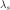
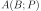
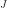
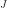
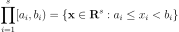
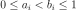
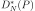
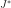
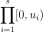

LowDiscrepancySequence¶
-
class
LowDiscrepancySequence(*args)¶ Base class to generate low discrepancy sequences.
- Available constructors:
- LowDiscrepancySequence(dimension=1)
Parameters: - dimension : int
Dimension of the points of the low discrepancy sequence.
Notes
The low discrepancy sequences, also called ‘quasi-random’ sequences, are a deterministic alternative to random sequences for use in Monte Carlo methods. These sequences are sets of equidistributed points which the error in uniformity is measured by its discrepancy.
The discrepancy of a set
 is defined,
using Niederreiter’s notation, as:
is defined,
using Niederreiter’s notation, as:
where  is the s-dimensional Lebesgue measure,  is the number of points in
 that fall into
that fall into  , and  is
the set of s-dimensional intervals or boxes of the form:
, and  is
the set of s-dimensional intervals or boxes of the form:
where .
The star-discrepancy  is defined similarly, except that the supremum is taken over the set  of intervals of the form:

where
 is in the half-open interval
is in the half-open interval  .
.A low-discrepancy sequence can be generated only through the derived classes of LowDiscrepancySequence. The sequences implemented are
Faure,Halton,Reverse Halton,HaselgroveandSobolsequences.Examples
>>> import openturns as ot >>> # Create a sequence of 3 points of 2 dimensions >>> sequence = ot.LowDiscrepancySequence(ot.SobolSequence(2)) >>> print(sequence.generate(3)) 0 : [ 0.5 0.5 ] 1 : [ 0.75 0.25 ] 2 : [ 0.25 0.75 ]
Methods
computeStarDiscrepancy(sample)Compute the star discrepancy of a sample uniformly distributed over [0, 1). generate(*args)Generate a sample of pseudo-random vectors of numbers uniformly distributed over [0, 1). getClassName()Accessor to the object’s name. getDimension()Accessor to the dimension of the points of the low discrepancy sequence. getId()Accessor to the object’s id. getImplementation(*args)Accessor to the underlying implementation. getName()Accessor to the object’s name. initialize(dimension)Initialize the sequence. setName(name)Accessor to the object’s name. -
__init__(*args)¶ Initialize self. See help(type(self)) for accurate signature.
-
computeStarDiscrepancy(sample)¶ Compute the star discrepancy of a sample uniformly distributed over [0, 1).
Parameters: - sample : 2-d sequence of float
Returns: - starDiscrepancy : float
Star discrepancy of a sample uniformly distributed over [0, 1).
Examples
>>> import openturns as ot >>> # Create a sequence of 3 points of 2 dimensions >>> sequence = ot.LowDiscrepancySequence(ot.SobolSequence(2)) >>> sample = sequence.generate(16) >>> print(sequence.computeStarDiscrepancy(sample)) 0.12890625 >>> sample = sequence.generate(64) >>> print(sequence.computeStarDiscrepancy(sample)) 0.0537109375
-
generate(*args)¶ Generate a sample of pseudo-random vectors of numbers uniformly distributed over [0, 1).
Parameters: - size : int
Number of points to be generated. Default is 1.
Returns: - sample :
Sample Sample of pseudo-random vectors of numbers uniformly distributed over [0, 1).
Examples
>>> import openturns as ot >>> # Create a sequence of 3 points of 2 dimensions >>> sequence = ot.LowDiscrepancySequence(ot.SobolSequence(2)) >>> print(sequence.generate(3)) 0 : [ 0.5 0.5 ] 1 : [ 0.75 0.25 ] 2 : [ 0.25 0.75 ]
-
getClassName()¶ Accessor to the object’s name.
Returns: - class_name : str
The object class name (object.__class__.__name__).
-
getDimension()¶ Accessor to the dimension of the points of the low discrepancy sequence.
Returns: - dimension : int
Dimension of the points of the low discrepancy sequence.
-
getId()¶ Accessor to the object’s id.
Returns: - id : int
Internal unique identifier.
-
getImplementation(*args)¶ Accessor to the underlying implementation.
Returns: - impl : Implementation
The implementation class.
-
getName()¶ Accessor to the object’s name.
Returns: - name : str
The name of the object.
-
initialize(dimension)¶ Initialize the sequence.
Parameters: - dimension : int
Dimension of the points of the low discrepancy sequence.
Examples
>>> import openturns as ot >>> # Create a sequence of 3 points of 2 dimensions >>> sequence = ot.LowDiscrepancySequence(ot.SobolSequence(2)) >>> print(sequence.generate(3)) 0 : [ 0.5 0.5 ] 1 : [ 0.75 0.25 ] 2 : [ 0.25 0.75 ] >>> print(sequence.generate(3)) 0 : [ 0.375 0.375 ] 1 : [ 0.875 0.875 ] 2 : [ 0.625 0.125 ] >>> sequence.initialize(2) >>> print(sequence.generate(3)) 0 : [ 0.5 0.5 ] 1 : [ 0.75 0.25 ] 2 : [ 0.25 0.75 ]
-
setName(name)¶ Accessor to the object’s name.
Parameters: - name : str
The name of the object.